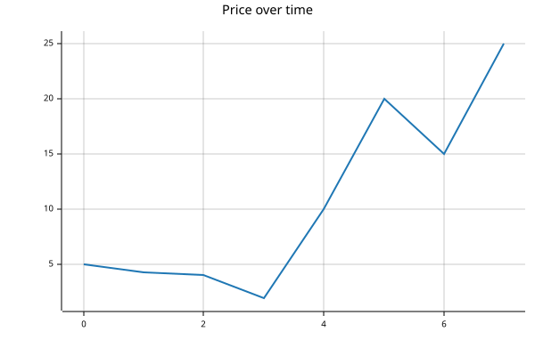

BFrame
def BFrame(
*values, keys:NoneType=None, names:NoneType=None, **fields
):A native BPL value with shape, keys and names. An array that holds a function as a direct item is a FunctionArray.
A native BPL value with shape, keys and names. An array that holds a function as a direct item is a FunctionArray.
┌→────────────┐
│ col:┌→────┐ │
│ │1 2 3│ │
│ └ₓ────┘ │
└∊────────────┘Select by positions, keys, slices or per-axis masks. None inserts an axis and ... keeps omitted axes.
| Number | City | Gender | Age | Income | Illness | |
|---|---|---|---|---|---|---|
| 0 | 1 | Dallas | Male | 41 | 40367.0 | No |
| 1 | 2 | Dallas | Male | 54 | 45084.0 | No |
| Number | City | Gender | Age | Income | Illness | |
|---|---|---|---|---|---|---|
| 0 | 1 | Dallas | Male | 41 | 40367.0 | No |
| 1 | 2 | Dallas | Male | 54 | 45084.0 | No |
{(↑⍺)⍠0 ⍵}⍤[0 ∞]↣(□, {(↑⍺)⍠0 ⍵}⍤[0 ∞])↣(□, {(↑⍺)⍠0 ⍵}⍤[0 ∞]⍤[∞ 2]){'mean': +/÷≢, 'rmse': (+/÷≢)@⊼}| Income | ||
|---|---|---|
| Male | mean | 48301.425926 |
| Female | mean | 39739.369565 |
windows docs with arg explanations: https://answerdotai.github.io/basedpl/glyphs/up-down-arrow.html
| price | ||
|---|---|---|
| 0 | mean | 3.100000 |
| 1 | mean | 4.466667 |
| 2 | mean | 3.466667 |
| 3 | mean | 5.366667 |
| 4 | mean | 10.666667 |
| 5 | mean | 15.000000 |
| 6 | mean | 20.000000 |
| 7 | mean | 13.333333 |

┌→────────────────────────────────────┐
│ x:┌→────────────────┐ count:┌→────┐ │
│ │29292.75 55542.25│ │43 57│ │
│ └~────────────────┘ └ₓ────┘ │
└∊────────────────────────────────────┘